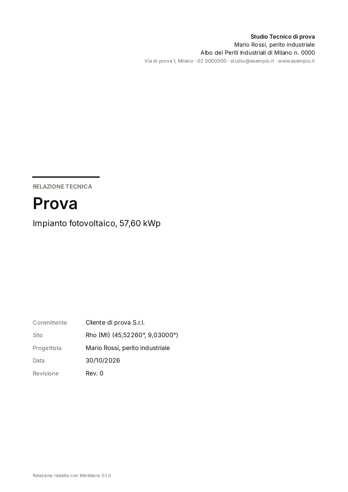
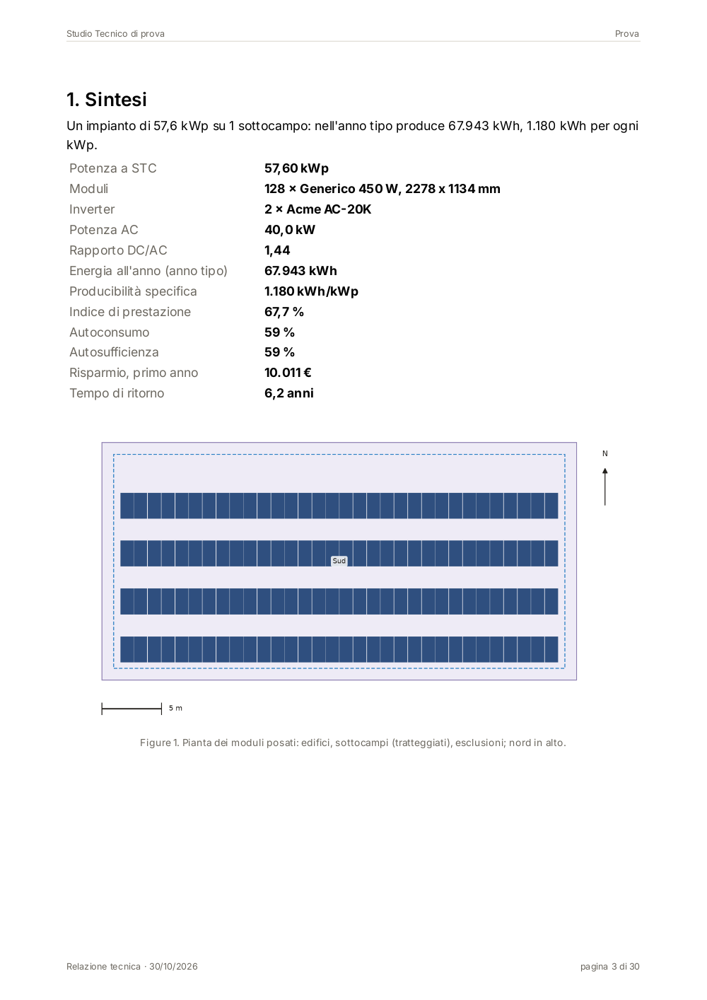
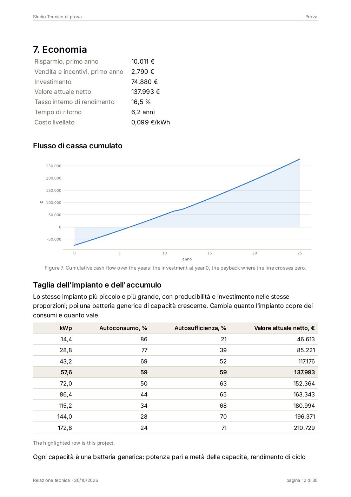

Stesso impianto in tutte: 331,2 kWp, 736 moduli da 450 Wp, 2 inverter da 100 kW, 420.700 kWh/anno, 1.270 kWh/kWp, PR 78,1 %, Rho (MI). Dati illustrativi. Pagine a misura A4 (794 × 1123 px a 96 dpi). I caratteri sono quelli in data/fonts (Inter, Titillium Web, OFL); il bozzetto C aggiunge Source Serif 4 e IBM Plex Mono (OFL).
Ogni impostazione: prima pagina, pagina tabelle e perdite con grafico, pagina con la pianta. In fondo, una pagina di oggi per confronto.
Pro: la regola «ogni numero dice da dove viene» diventa la struttura stessa della pagina (colonna sinistra: etichette, fonti, note; destra: contenuto); sobrio, da ufficio tecnico, regge autorizzazioni e installatori. Contro: la colonna costa il 20 % della larghezza; il committente non tecnico trova i numeri di testa solo a fine copertina; monocromo, meno «vendibile».
Dimensionamento, producibilità, verifiche elettriche e analisi economica
| Mese | Irraggiamento in piano, kWh/m² | Energia immessa, kWh | PR, % | PVGIS, kWh | Fonte |
|---|---|---|---|---|---|
| Gennaio | 58 | 15.900 | 82,8 | 15.100 | R-040.01 |
| Febbraio | 84 | 23.400 | 84,1 | 22.600 | R-040.02 |
| Marzo | 137 | 37.200 | 82,0 | 36.300 | R-040.03 |
| Aprile | 166 | 44.100 | 80,2 | 43.900 | R-040.04 |
| Maggio | 199 | 50.800 | 77,1 | 51.200 | R-040.05 |
| Giugno | 217 | 54.300 | 75,6 | 55.000 | R-040.06 |
| Luglio | 230 | 57.100 | 75,0 | 57.800 | R-040.07 |
| Agosto | 202 | 50.200 | 75,0 | 50.900 | R-040.08 |
| Settembre | 151 | 38.600 | 77,2 | 38.100 | R-040.09 |
| Ottobre | 101 | 26.900 | 80,4 | 26.000 | R-040.10 |
| Novembre | 51 | 13.700 | 81,1 | 13.000 | R-040.11 |
| Dicembre | 30 | 8.500 | 85,5 | 7.900 | R-040.12 |
| Anno | 1.626 | 420.700 | 78,1 | 417.800 | R-040 |
| Sottocampo | Su | Area, m² | Moduli | kWp | Montaggio | Azimut, ° | Inclin., ° | Passo, m | Fonte |
|---|---|---|---|---|---|---|---|---|---|
| Sud | Capannone C1 | 4.560 | 736 | 331,2 | File inclinate, zavorrate | 0 | 30 | 4,50 | R-010 |
| Totale | 4.560 | 736 | 331,2 |
Azimut da sud, positivo verso ovest (CEI 82-25); area come disegnata in pianta. Le file poggiano su zavorre prefabbricate senza forare il manto: il carico aggiuntivo, 18 kg/m² sull'impronta delle zavorre, va verificato dallo strutturista (fuori da questa relazione).
Pro: la prima pagina è una scheda che si legge in un minuto (committente, GSE, sportello unico); colore per tipo di dato (ambra energia, azzurro impianto, verde economia) costante in tutto il documento; Titillium Web è il carattere della PA italiana. Contro: più «brochure» che relazione d'ufficio tecnico; le fonti stanno in nota piccola sotto ogni blocco, meno in vista; il colore in stampa in bianco e nero perde il codice.
| Moduli | 736 × Esempio Mono 450 Wp |
| Stringhe | 32 da 23 moduli |
| Inverter | 2 × Esempio 100K, 100 kW |
| Potenza AC | 200 kW |
| Rapporto DC/AC | 1,66 |
| Posa | file inclinate 30°, sud, passo 4,50 m |
| Connessione | MT, cabina esistente |
| Consumo del sito | 790.000 kWh/anno |
| Autoconsumo | 71 % dell'energia prodotta |
| Autosufficienza | 38 % dei consumi |
| Risparmio, primo anno | 58.400 € |
| Vendita (RID), primo anno | 7.900 € |
| VAN a 25 anni | 612.000 € |
Ogni barra è una perdita in percentuale del passo precedente; le due ambra sono l'energia a monte e a valle, in kWh/kWp.
| Mese | kWh/m² | kWh | PR, % |
|---|---|---|---|
| Gennaio | 58 | 15.900 | 82,8 |
| Febbraio | 84 | 23.400 | 84,1 |
| Marzo | 137 | 37.200 | 82,0 |
| Aprile | 166 | 44.100 | 80,2 |
| Maggio | 199 | 50.800 | 77,1 |
| Giugno | 217 | 54.300 | 75,6 |
| Luglio | 230 | 57.100 | 75,0 |
| Agosto | 202 | 50.200 | 75,0 |
| Settembre | 151 | 38.600 | 77,2 |
| Ottobre | 101 | 26.900 | 80,4 |
| Novembre | 51 | 13.700 | 81,1 |
| Dicembre | 30 | 8.500 | 85,5 |
| Anno | 1.626 | 420.700 | 78,1 |
| Dati meteo | PVGIS-SARAH3, anno tipo 2005-2023 |
| Modello moduli | Sandia (SAPM), pvlib 0.13 |
| Temperatura celle | Faiman, montaggio aperto |
| Albedo | 0,20 |
| Sporcizia | 2,5 %, costante |
| Disponibilità | 99,5 % |
| Degrado | 0,45 %/anno dal 2° anno |
| Meridiana, pvlib | 420.700 kWh |
| PVGIS 5.3, perdite 14 % | 417.800 kWh |
| Scarto | +0,7 % |
| Su | Capannone C1, copertura piana |
| Area occupata | 4.560 m² |
| Moduli | 736, in verticale |
| Potenza | 331,2 kWp |
| Montaggio | file inclinate, zavorrate |
| Azimut / inclinazione | 0° (sud) / 30° |
| Passo delle file | 4,50 m |
Con moduli di 2,278 m inclinati di 30° e passo 4,50 m restano 2,52 m liberi dietro ogni fila.
Il sole sopra 24,3° supera la fila davanti senza fare ombra; a Rho, al solstizio d'inverno, a mezzogiorno è a 21,0°: l'ombra fra le file c'è da metà novembre a fine gennaio, nelle prime e ultime ore. Costa il 3,2 % dell'energia annua (pagina 9).
Pro: si legge come un documento d'ingegneria firmato, non come l'uscita di un programma; colonna laterale per fonti e note, testo giustificato con sillabazione, numeri in carattere a spaziatura fissa (allineano da soli); la copertina usa la pianta stessa. Contro: due famiglie in più da portare nel programma (Source Serif 4, IBM Plex Mono, OFL, circa 1,2 MB); il serif a 10,5 pt chiede una stampa buona; meno adatto a schermo.
Dimensionamento dell'impianto, producibilità nell'anno tipo, verifiche elettriche secondo CEI 64-8/7 e CEI 82-25, bilancio con i consumi e analisi economica a 25 anni.
Nell'anno tipo l'impianto immette in rete 420.700 kWh, 1.270 kWh per ogni kWp installato. Il calcolo è orario, su 8.760 ore dell'anno tipo PVGIS-SARAH3, e segue ogni kilowattora dall'irraggiamento sul piano dei moduli fino al punto di consegna: le perdite di ciascun passo sono nella cascata qui sotto e, una per una, nel registro dei calcoli in allegato.
| Mese | Irraggiamento in piano, kWh/m² | Energia immessa, kWh | PR, % | PVGIS, kWh |
|---|---|---|---|---|
| Gennaio | 58 | 15.900 | 82,8 | 15.100 |
| Febbraio | 84 | 23.400 | 84,1 | 22.600 |
| Marzo | 137 | 37.200 | 82,0 | 36.300 |
| Aprile | 166 | 44.100 | 80,2 | 43.900 |
| Maggio | 199 | 50.800 | 77,1 | 51.200 |
| Giugno | 217 | 54.300 | 75,6 | 55.000 |
| Luglio | 230 | 57.100 | 75,0 | 57.800 |
| Agosto | 202 | 50.200 | 75,0 | 50.900 |
| Settembre | 151 | 38.600 | 77,2 | 38.100 |
| Ottobre | 101 | 26.900 | 80,4 | 26.000 |
| Novembre | 51 | 13.700 | 81,1 | 13.000 |
| Dicembre | 30 | 8.500 | 85,5 | 7.900 |
| Anno | 1.626 | 420.700 | 78,1 | 417.800 |
Anno tipo PVGIS-SARAH3, 2005-2023, ore locali; temperatura e vento da ERA5.R-030 · § 9.1
Modelli Sandia (SAPM) per i moduli, Faiman per la temperatura delle celle, NREL per gli inverter; pvlib 0.13.§ 9.2
PVGIS è un controllo esterno sugli stessi dati meteo, con perdite di sistema fisse al 14 % e senza le ombre fra le file: lo scarto dello 0,7 % è nella norma.R-043
Indice di prestazione PR = E / (PSTC · HPOA) = 420.700 / (331,2 · 1.626) = 78,1 %. D'inverno è più alto perché i moduli sono freddi.R-041
I 736 moduli stanno sulla copertura piana del capannone C1 in otto file di 92, montati in verticale su strutture zavorrate inclinate di 30° e rivolte a sud. Il passo di 4,50 m lascia 2,52 m liberi dietro ogni fila: il sole supera la fila davanti quando è sopra 24,3°, e a Rho al solstizio d'inverno a mezzogiorno è a 21,0°. L'ombra fra le file resta dunque alle ore basse dei mesi invernali e costa il 3,2 % dell'energia annua.
| Sottocampo | Su | Area, m² | Moduli | kWp | Montaggio | Az., ° | Incl., ° | Passo, m |
|---|---|---|---|---|---|---|---|---|
| Sud | Capannone C1 | 4.560 | 736 | 331,2 | File inclinate, zavorrate | 0 | 30 | 4,50 |
| Totale | 4.560 | 736 | 331,2 |
Capannone C1 120 × 40 m, copertura piana in lamiera grecata coibentata; parapetto di 1,10 m sui quattro lati.rilievo del 14/10/2026 · R-001
Zavorre 18 kg/m² sull'impronta, senza forare il manto. La verifica del carico sulla struttura è dello strutturista e non fa parte di questa relazione.R-013
Distanza fra le file d = L · cos β + L · sin β / tan αlim, con L = 2,278 m, β = 30°, αlim = 24,3°: d = 4,50 m.R-012 · CEI 82-25, § 8.2
Modello Completa, pagine 1, 3 e 12 del progetto di prova (57,6 kWp): copertina, Sintesi con la pianta, Economia con il grafico. Foto di V.


